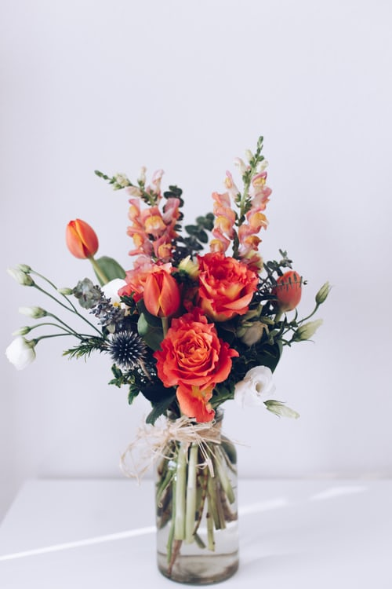

Красные тюльпаны
Раннецветущие алые тюльпаны – это самые первые цветы, которые всходят на грядках садоводов. Они отличаются от среднецветущих и позднецветущих размерами, формой, обилием красок. Период цветения этих видов – от конца марта до конца мая.

- Дюк ван Толь
- – относится к небольшим растениям с длиной соцветия до 15-22 см. Цветонос обладает красивым красным цветом с желтой каймой. Цвести начинает с конца марта. Прекрасно смотрится в группе с другими цветами в клумбе.
- Геснера
- – относится к невысоким растениям. Это красные и желтые цветы, но встречаются и красно-желтые окраски. Пользуются высоким спросом у садоводов. Их размножают семенами. Высота этих цветов до 16-22 см.
- Brilliant Star
- – класс, который отличается от других изумительно яркой винной окраской и темными пятнышками у донышка. Общая длина этого растения достигает 30 см, а соцветие в длину способно вырасти до 7 см. Отмечена хорошая выносливость.
Назад